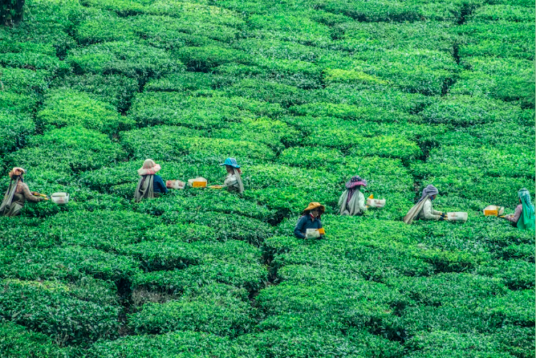

Historien Om Medovas Design
Medova te blev udbredt i efterkridstiden, hvor mange faldt for den billige og hurtige Medova te.
Teen var i efterkridstiden kendt for sine flotte, farverige og stærkt dekoreret tedåser. i tiden omkring 1. verdenskrig
var tedåsen nogen af de smukkeste og mest dekorative tedåser fremstillet i Danmark. Medova dåserne fra 1900-tallet
er nu et samle objekt for mange, da det specielle og tidsbestmte design sender en tilbage i tiden og har en kæmpe historie
bag sig.
Det seneste design, som de fleste nok kan huske, er den blå tepakke med den ikoniske dame uden på og med et
slogan som de fleste kan huske "Er du udkørt kl. 15".
Produkt information
Alle vores produkter er 100% økologisk. Under vores produktudvikling bruger vi ingen kunstige smagsforstærkere og aromastoffer. Vi går nemlig op i at kvaliteten ikke bliver gået på kompromis. Alle vores råstoffer underlagt streng kvalitetskontrol og er lavet af 100% topskud fra teplanter.
4 Gode grunde til at drikke te

Selvom du måske ved, at det er et sundt valg at drikke te, kender du så virkelig alle potentielle sundhedsfordele?
Denne infographic viser nogle af de bedste sundhedsfordele ved at drikke sort, grøn og hvid te.
Te indeholder E-vitamin, C-vitamin, samt en masse flavonoider og fenoler,
som spiller en stor rolle i bekæmpelse af virusser. På den måde har teen
mange sunde egenskaber og er med til at styrke dit immunforsvar.